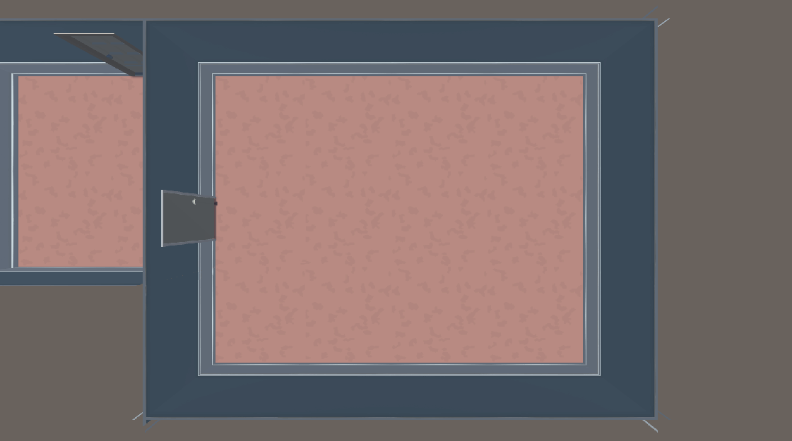
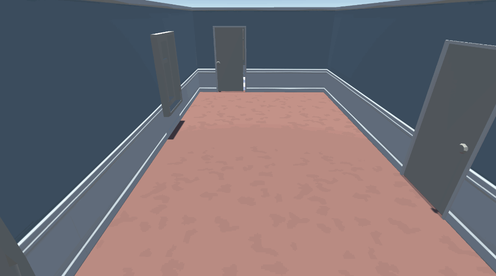
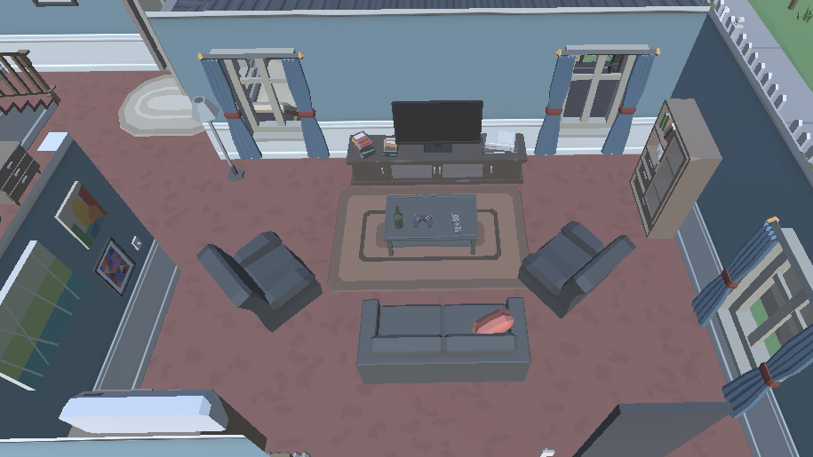
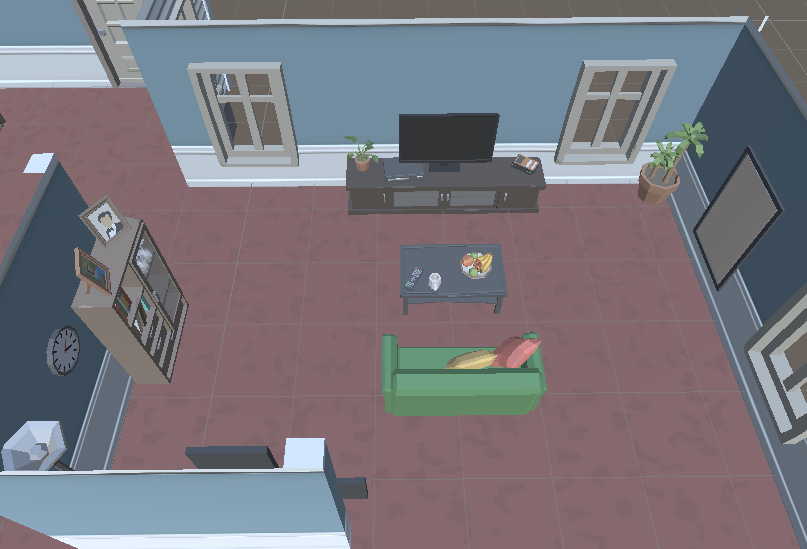
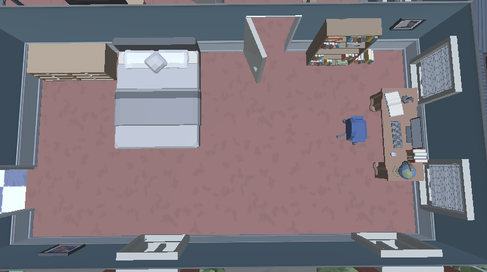
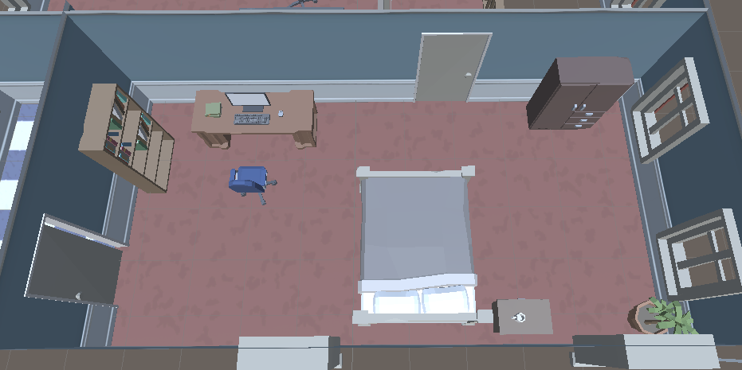

Interior Room Generator
An interior room generator, which detects where a room is and populates the content of the room! The purpose of this project was to look at a concept I had read about while doing researching into my Dissertation, which spoke about using an Object Relationship Hierarchy to generate the contents of a room. I wanted to work on a solution that used this approach to create a tool that could be used to help generate the interiors of rooms.
Room Detector
The first step for this project was to be able to detect the rooms that I was to eventually generate objects in. When starting this project I downloaded an asset pack for props to use in this project. In this asset pack was a pre-created demo scene including a house, which I used as a example of what I wanted the final outcome of this project to be. The specifications for this room detector meant that :
- Detect where a wall is. (A wall is defined at 90 degree intervals)
- Detect where a door is.
- Dectect where a window is.
Room Detection is done with initally casting rays till it hits walls in each direction. This creates a square area that a room is believed to be in. For non-squared rooms, this means there are several overlapping square areas which need to be merged together. To check for overallping rooms, for accuracy an AABB method could of been used, however in my generator I decided to just check the distance between the different square areas due to how close they are. These merged square areas creates a max area that the room is situated in and needs to be searched.
Once a max area is defined for where the room is, a more detailed check is done using raycasts. Each ray is cast at an interval in 4 directions, which can be defined by the user. Each rays length is equal to the distance to the edge of the room from its current possition. If the interval hits 4 walls, then that interval is inside of the room. Each hit inside of the room can be marked with a enum depending upon its distance to where the ray hit the wall, which would define the possition of that interval, either an edge, door, window or empty space. This map of locations inside of the room can then be passed onto the room generator to spawn objects.
Content Generator
Room content is generated using a Object Relationship Hierarchy (ORH), which is like a node tree. An ORH describes the relationship between objects, so for example a chair would have a relationship to a TV, and a table would have a relationship of being inbetween the chair and the TV. Using this, I would be able to describe where objects should spawn in relation to each other forming the content of the room.
With the ORH defining where objects should be placed, at each node layer, using the conditions describing where the object it should be placed, a list of possible spawning locations is formed. From this list one location is picked, the space checked as to whether the object can spawn in the space. Also during this time, a flood fill algorithm is used to check that access to the whole room and other doorways are accessible. For example, if a table was to be spawned at an edge, a list off all edge tiles is formed and one spot picked. If that table also had a condition for spawning next to an object, a list of edge tiles surrounding previous object would form the possible spawn possition list. The conditions then all link together to form the way in which rooms are generated.
Reflection
As I said before, this asset pack also came with a pre-created house which I could use to then compare my generation with a hand made content. So with that lets look at some of the rooms and compare them starting with the living room. Below is an image of the pre-created living room, followed by an image of the procedurally generated living room
Pre-Created
Generated

Both of these rooms look rather similar to each other, they both spawn with a main focus point with the TV in the center of the room, and a place to sit, and is also surrounded by objects like shelves. The only thing my generator
doesn't do is having chairs next to other chairs that will face towards the TV as well, which is due to the grid that the generator uses to spawn objects over.
The next room to look at is the bedroom.
Pre-Created
Generated
Again, like the living room, you can see a resemblance between the two bedrooms. The generated room looks like a bedroom with the items that you would see in a bedroom and objects spawning in a location which looks appropriate.
Overall, the room generator works well to generate the basic outline for a room. The content generated allows a user to define the structure of a room and allows for some complex conditions like spawning objects inline and inbetween, however there is some limitations as to what it can do such as the fact that everything is grid oriented and so objects that don't stictly follow a grid e.g. objects thats are rotated by 45 degrees. With this in mind, working around the limitations of this generator, can still create acurate rooms, that maybe just need a touch up afterwards by a designer to be used fully inside of a game.